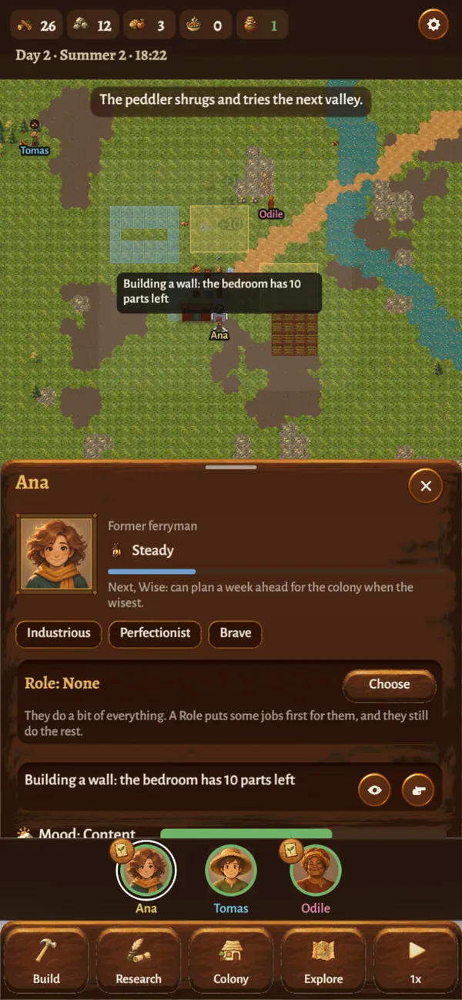

Minds of their own
Tap anyone to see what they're doing, and why.
Every settler chooses their own work by what the colony needs and what they care about: their skills, their traits, how tired or hungry they are, who they love. Their sheet tells you what they're doing and why.
When you need something done, nudge them toward it. Nothing else to micromanage.